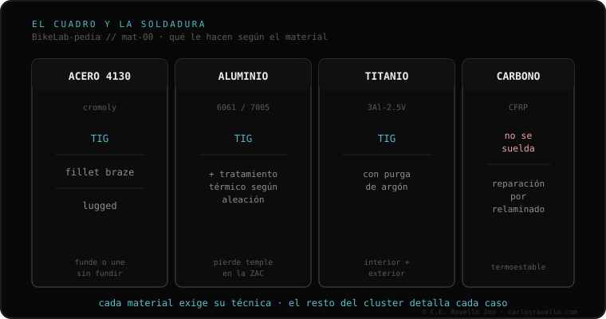

EN CORTO
Respira. Antes de tirar el cuadro o llevarlo a cualquiera: primero confirma que es una grieta y no la pintura (límpiala; si reaparece y la uña engancha, es real). Segundo, identifica el material, porque cambia todo. Tercero, entiende qué le hace el calor: el aluminio pierde temple según su aleación, el titanio exige purga de argón, el carbono no se suelda. Y cuarto, usa cuatro preguntas para saber si el soldador sabe de cuadros o solo suelda rejas. Lo que NO te voy a decir es si tu cuadro se repara o si es seguro rodarlo: eso es tuyo y de tu profesional.
La mayoría de la gente que llega al taller con un cuadro roto llega asustada y con una sola pregunta: "¿se arregla?". Esa no te la voy a responder yo, y al final entenderás por qué no debe respondértela nadie por internet. Lo que sí puedo darte es lo que de verdad te falta: el idioma para esa conversación. Llevo años llevando cuadros a soldar, viendo qué hacen, preguntando, y contrastando cada cosa con lo que está documentado —que es como trabajamos en BikeLab Studio: evidencia antes que opinión—.
Antes de entrar en pánico o de gastar un sol, hay que saber si lo que ves es estructural. Mucha gente llega al taller con un rayón de pintura, y otra mucha rueda meses sobre una grieta real creyendo que "es la pintura". Las dos cosas son malas.
La grieta estructural casi siempre tiene tres señales: aparece cerca de una unión (donde se juntan dos tubos, el pedalier, la pipa de dirección, las punteras), sigue una línea propia, y sobre todo reaparece si la limpias. Limpia bien con desengrasante, seca y mira con buena luz: un rayón de pintura se ve superficial; una grieta sigue ahí como una línea fina y definida, y muchas veces deja escapar una rayita de óxido desde dentro. ¿El truco más simple? Pasa el filo de la uña perpendicular a la marca; si engancha, ya no es solo pintura. Para salir de dudas existe el líquido penetrante (hay kits baratos): tiñe la grieta y la dibuja clarísima. Nada de esto te dice si es seguro rodar —eso es otra cosa—; solo confirma que tienes una grieta real.
Sabiendo que es una grieta, necesitas saber de qué material está hecho, porque cambia todo lo que viene: la técnica, la herramienta, lo que le pasa al metal con el calor y a quién hay que buscar.

No te voy a decir si vale la pena ni si quedará seguro. Te voy a decir qué pasa físicamente cuando se acerca el soplete a cada material, que es lo que casi nadie te explica.
Acero. El más amable de soldar: TIG o brazing. Pero ojo con la falsa confianza: si tu cuadro es de tubería fina de marca o lleva racores (lugs), el exceso de calor de quien suelda vigas quema la pared delgada o derrite la unión de bronce contigua. El material perdona; la mano improvisada, no. Detalle en la ficha de acero cromoly.
Aluminio. Aquí está el detalle. Viene en dos familias, 6061 y 7005. El 6061 gana su dureza con un tratamiento de fábrica (T6) y soldarlo borra ese temple alrededor del cordón; recuperarlo exige horno, no "pasar el soplete otra vez". Por eso tantas reparaciones baratas de aluminio vuelven a partirse en meses, casi siempre al lado de la soldadura nueva. El 7005 recupera solo, al aire. Por eso la pregunta no es "¿lo sueldas?" sino "¿qué aluminio es?".
Titanio. Se suelda con TIG, pero exige purgar con argón por dentro y por fuera. El titanio caliente se traga el oxígeno y eso vuelve el cordón frágil. Pista visual: cordón bien hecho = pajizo o plateado; azulado, gris o blanquecino = contaminación. Más en titanio y la purga de argón.
Carbono. No se suelda. Punto. Es termoestable: no se funde para reunirlo. Lo que existe es reparación por relaminado (scarf) en un taller de composites, no un soldador. Si alguien te ofrece "soldarte" el carbono o echarle fibra de ferretería, sal de ahí. Ver por qué el carbono no se suelda.
Aunque la soldadura quede perfecta, hay un efecto que casi nadie menciona: el calor encoge y tuerce el metal. Sueldas una vaina y, al enfriarse, tira unos milímetros. ¿Resultado? La rueda trasera queda chueca, el freno de disco roza sin parar, la cadena salta. Has pagado una soldadura sólida y la bici no rueda recta. Por eso los que saben no sueldan "a ojo": usan plantillas y un banco de alineación (jig) que sujeta la geometría mientras el metal se enfría. Es una de las razones por las que soldar un cuadro no es lo mismo que soldar cualquier cosa —y por las que el precio "de ganga" muchas veces significa que ese paso no se hará—.
Esta es la parte que de verdad te llevas al taller. No necesitas saber soldar: necesitas cuatro preguntas y ver si las contesta sin dudar o si improvisa. En treinta segundos sabes si tienes enfrente a alguien que entiende cuadros o a alguien que suelda portones.
La versión de bolsillo de estas preguntas está en la ficha qué preguntarle al soldador.
Yo no te voy a decir "tu cuadro se repara" ni "no se repara", ni "es seguro volver a rodarlo". No porque me lave las manos, sino porque esa decisión es tuya y de tu profesional de confianza, que ve el cuadro, la rotura, el material y el uso que le das. Cada caso es distinto y nadie serio te lo resuelve por una foto en un foro. Lo único que añado, porque es honesto: en algún momento esa decisión también es de números —una reparación de aluminio bien hecha, con su tratamiento térmico y su alineación, puede acercarse al precio de un cuadro de segunda mano—. No te digo qué hacer con ese dato; te digo que lo tengas en la cabeza.
Lo que sí puedo darte es el idioma. Entrar a esa conversación sabiendo qué es tu cuadro, qué le hace el calor, qué preguntas separan al que sabe del que improvisa, y por qué el "queda como nuevo" es una advertencia y no un alivio. Con eso ya no entras a ciegas. Y esa, créeme, es la mitad del problema resuelta.
¿Quieres el detalle técnico con datos y fuentes? Está en la revisión documentada: soldadura de cuadros por material. ¿Quieres ir ficha por ficha? El clúster El cuadro y la soldadura de la BikeLab-pedia.
No conviene asumirlo. El aluminio exige TIG y, según la aleación (6061 o 7005), tratamiento térmico posterior en horno. Pregunta técnica, aporte y tratamiento térmico antes de dejar el cuadro.
Limpia y desengrasa, mira con buena luz. Una grieta real reaparece, suele estar cerca de una unión y a veces deja una línea de óxido. Si la uña engancha al pasar perpendicular, ya no es solo pintura.
No. Se repara por relaminado en un taller de composites, no en un soldador. Si te ofrecen soldarlo o echarle fibra de ferretería, sal de ahí.
Al contrario. Quien conoce el material explica límites. La promesa de perfección absoluta suele venir de quien menos sabe lo que está tocando.
© 2026 BikeLab Studio. Contenido bajo CC BY 4.0: puedes copiarlo, traducirlo y publicarlo, incluso con fines comerciales. La cita es obligatoria. Sin atribución, la licencia se revoca de forma automática (CC BY 4.0, §6.a) y el uso pasa a ser una infracción de derechos de autor: solicitamos la retirada del contenido y su desindexación. · Diseño y propiedad: Carlos Ravello Joo